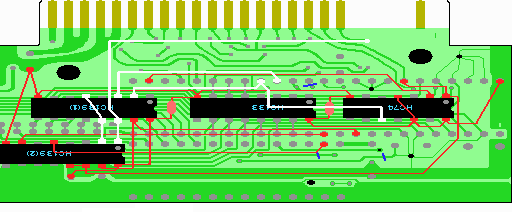

12．配線の山場（２／４）
ここでの配線は回路図で橙色でかかれている部分です。

1. 2212P003の34ピンにスロットからのA15信号が来ていますので、HC139(1)の3ピンにつなげます。
2. 2212P003の33ピンにスロットからのA14信号が来ていますので、HC74の10ピンとHC139(1)の2ピンにつなげ
ます。
3. 実体図を参考にスロットの13ピン(/WR)とHC139(1)の14ピン(＝HC139(2)の1ピン)をつなげます。
4. HC139(1)の5ピンとHC139(1)の13ピン(＝HC139(2)の2ピン)をつなげます。
 次へ
次へ